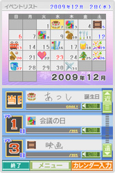
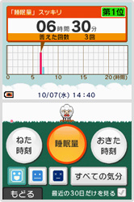
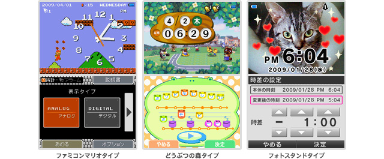

いつも持ち歩けるDSiでスケジュール管理もできたらいいのに。そんな希望に応えてくれるDSiウェアをご紹介します。カレンダーに予定を登録したり、DSiをめざまし時計にしたり、現在の時間を楽しくお知らせしてくれるソフトです。


予定を手早く登録＆確認
タッチペンを使った手書きでカレンダーにイベントを登録すると、そのイベントの予定日を「あと○○日」という形でお知らせしてくれます。定形のイベントやカレンダーに表示する際に使われるアイコンも用意されているので、イベントの入力は素早く簡単に行えますし、いつどんな予定があるのかもカレンダーで一望できます。
もちろん、1日に複数のイベントを登録できるほか、次回起動時に自分に向けたメモを残すこともできます。毎日の仕事や勉強の予定だけでなく、家族やお友達の誕生日や記念日など、覚えておきたいイベントを最大110件登録できます。
1日のはじまりや移動中など、DSiをいつも持ち歩いて、合間の時間をスケジュールの登録と確認に有効活用してはいかがでしょうか。
©2009 Nintendo Developed by INTELLIGENT SYSTEMS

毎日のめざましと睡眠時間管理
文字通り、DSiをめざまし時計として使うことができるソフトです。単なるめざまし機能だけではなく、睡眠時間や寝起きの気分をDSiの中に保存し、平均睡眠時間や気分よく起きられる睡眠時間などをグラフで見ることも可能です。
起床時間は3つまで登録可能で、めざまし音は6種類から選択可能。登録した時間にめざまし音や現在時刻の読み上げで起こしてくれます。めざましをセットした時間から、DSiのフタを開けてＡボタンを長押してめざましを止めた時間までが、その日の睡眠時間として記録されます。もちろん、Ａボタン長押しをせずにフタを閉じて二度寝すると、一定間隔でめざましをくり返す「スヌーズ」機能に入ります。
毎日記録することで、日々の睡眠時間を見つめ直してはいかがでしょうか。
©2009 Nintendo
机の上に楽しい時計ソフトを
DSiの上画面を卓上デジタル／アナログ時計として使うことができるソフトです。ファミコン版『スーパーマリオブラザーズ』や、『どうぶつの森』をモチーフにしたもの、そしてDSiで撮影した写真を時計と一緒に表示させることができるフォトスタンドタイプの3種類があります。
また、指定した時間に音でお知らせしてくれるアラーム機能も備えています。それぞれのタイプに3種類のアラーム音があらかじめ用意されていますが、どうぶつの森タイプでは、自分で自由に作曲できる「村メロ」をアラーム音に設定することもできます。また、ファミコンマリオタイプでは、マリオやルイージをＡボタンでジャンプ、Ｂボタンでダッシュさせて、ちょっとしたコイン集めゲームも楽しめます。
ちょっとした遊び心がある卓上時計は、デスクや勉強机の片隅にちょっとしたうるおいを与えてくれるでしょう。
©2009 Nintendo
